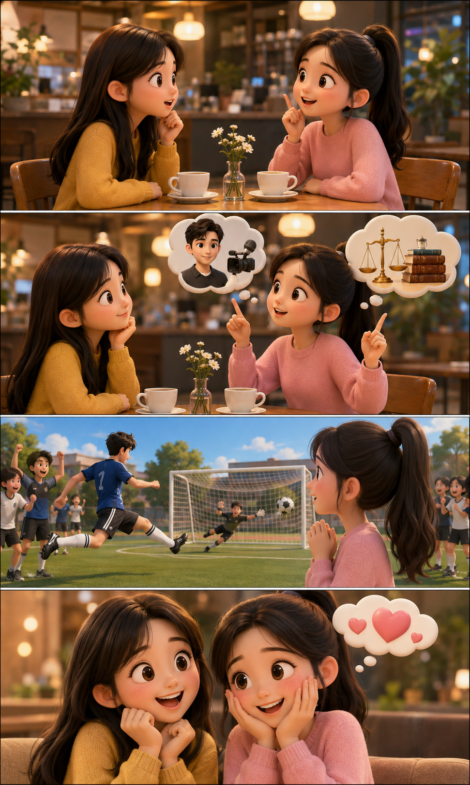
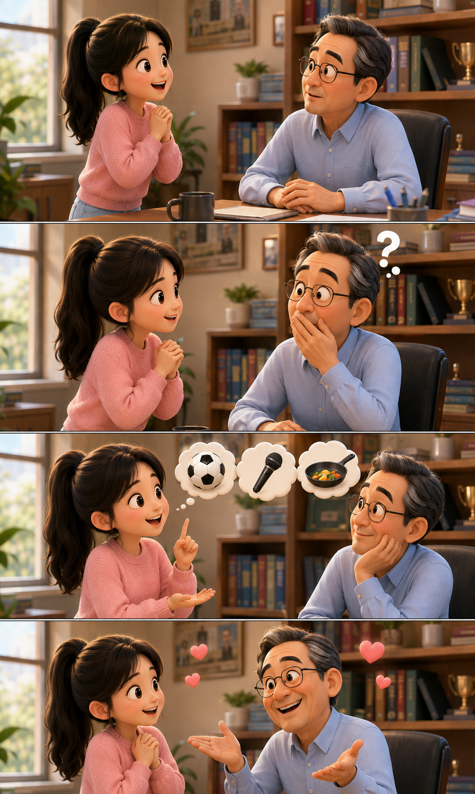
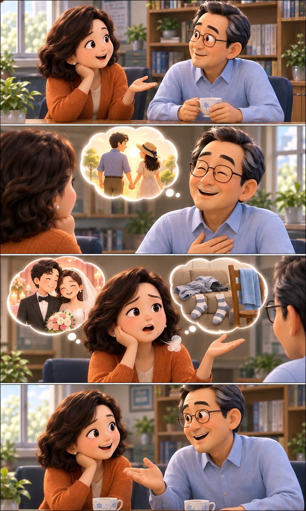
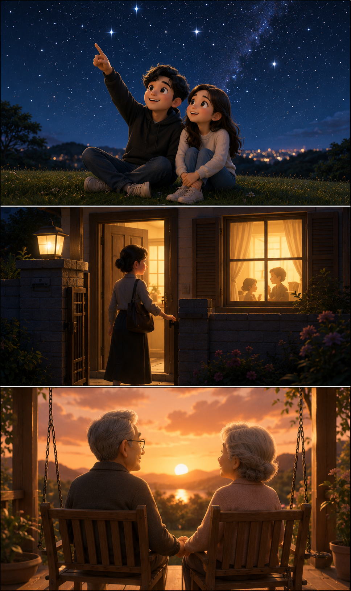
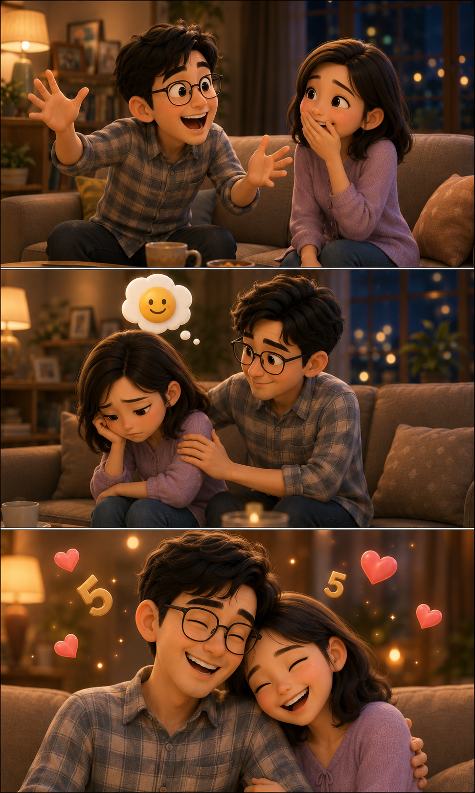

HSK4 · Giáo trình chuẩn HSK (bản cũ) · Bài 1
简单的爱情
Tình yêu đơn giản
🖼️
Ảnh ngang minh hoạ bài học (khuyến nghị tỉ lệ 16:9)
🔥 热身 1 · Khởi động
 A🖼️"ROMAN HOLIDAY"
A🖼️"ROMAN HOLIDAY"
 B🖼️"WHEN A MAN LOVES A WOMAN"
B🖼️"WHEN A MAN LOVES A WOMAN"
 C🖼️"TITANIC"
C🖼️"TITANIC"
 D🖼️"SLEEPLESS IN SEATTLE"
D🖼️"SLEEPLESS IN SEATTLE"
 E🖼️"NOTTING HILL"
E🖼️"NOTTING HILL"
 F🖼️"ROMEO + JULIET"
F🖼️"ROMEO + JULIET"
给下列电影名字选择对应的图片
Chọn hình tương ứng với tên phim bên dưới.
Đã ghép đúng: 0 / 6
A🖼️"ROMAN HOLIDAY"
B🖼️"WHEN A MAN LOVES A WOMAN"
C🖼️"TITANIC"
D🖼️"SLEEPLESS IN SEATTLE"
E🖼️"NOTTING HILL"
F🖼️"ROMEO + JULIET"
📋 Hướng dẫn giáo viên — Khởi động 1
Mục tiêu: Ôn nhanh khả năng đọc tên riêng phiên âm + gợi mở chủ đề tình yêu trước khi vào bài khoá.
Thời lượng gợi ý: 5–7 phút.
Mẹo tăng tương tác:
Thời lượng gợi ý: 5–7 phút.
Mẹo tăng tương tác:
- Có thể thay 6 ô placeholder bằng ảnh áp phích thật (xem hướng dẫn nhúng ảnh ở cuối file) để học sinh dễ nhận diện hơn.
- Sau khi ghép xong, hỏi nhanh: "Trong 6 phim này bạn đã xem phim nào?" để dẫn dắt hội thoại tự do.
🔥 热身 2 · Khởi động
你理想中的男/女朋友是什么样的？为什么？
Bạn trai/bạn gái lý tưởng của bạn là người thế nào? Tại sao?
👥 Chọn học sinh đang trả lời:
| 身高 | 体重 | 头发 | 眼睛 | 性格 xìnggé | 爱好 |
|---|---|---|---|---|---|
<160cm | <50kg | 长发 | 大眼睛 | 幽默 yōumò | 运动 |
160–170cm | 50–60kg | 短发 | 小眼睛 | 可爱 | 看电影 |
170–180cm | 60–70kg | 直发 | 单眼皮 dān yǎnpí | 安静 | 音乐 |
>180cm | >70kg | 卷发 | 双眼皮 | 认真 | 做菜 |
📋 Hướng dẫn giáo viên — Khởi động 2
Mục tiêu: Kích hoạt vốn từ miêu tả ngoại hình/tính cách đã học ở trình độ dưới, tạo không khí trước khi vào chủ đề tình yêu — hôn nhân.
Thời lượng gợi ý: 6–8 phút.
Mẹo tăng tương tác:
Thời lượng gợi ý: 6–8 phút.
Mẹo tăng tương tác:
- Cho học sinh tick chọn trực tiếp trên slide (nếu dạy 1:1) hoặc gọi từng học sinh trả lời miệng theo bảng (nếu lớp 2–3 người).
- Yêu cầu học sinh dùng cấu trúc đã học để nói thành câu hoàn chỉnh, không chỉ liệt kê từ.
📖 课文 1
孙月和王静聊王静的男朋友
Tôn Nguyệt và Vương Tịnh nói chuyện về bạn trai của Vương Tịnh
00:00 / 00:00
🔊 Chưa có file âm thanh (01-1.mp3)
孙
孙月听说你男朋友李进跟你是一个学校的，是你同学吗？
王
王静是的，他学的是新闻，我学的是法律，我和他不是一个班。
孙
孙月那你们俩是怎么认识的？
王
王静我们是在一次足球比赛中认识的。我们班跟他们班比赛，他一个人踢进两个球，我对他印象很深，后来就慢慢熟悉了。
孙
孙月你为什么喜欢他？
王
王静他不仅足球踢得好，性格也不错。
🗨️ 根据课文内容回答问题 · Trả lời câu hỏi theo nội dung bài học
王静跟李进是怎么认识的？
Gợi ý: 他们是在一次足球比赛中认识的。比赛时李进一个人踢进两个球，给王静留下了很深的印象，后来两人就慢慢熟悉了。
王静为什么喜欢李进？
Gợi ý: 因为李进不仅足球踢得好，性格也不错。
🗣️ 复述 · Thuật lại nội dung bài học
课文1：王静的语气
我叫王静，我的男朋友叫李进。……
🖼️
Ảnh dọc minh hoạ 课文1, cỡ lớn (tỉ lệ ~3:5), dạng 4 khung truyện tranh bám sát diễn biến hội thoại — xem gợi ý từ khoá chi tiết trong mục "🖼️ Toàn bộ file cần chuẩn bị"

📋 Hướng dẫn giáo viên — 课文1
Thời lượng gợi ý: 12–15 phút (đọc mẫu, giải nghĩa từ, đọc phân vai).
Mẹo tăng tương tác:
Mẹo tăng tương tác:
- Cho học sinh đọc phân vai 孙月 / 王静 trước khi giải thích từ mới.
- Bấm trực tiếp vào các từ được gạch chân trong bài khoá để mở phân tích Hán tự và luyện bút thuận ngay tại chỗ.
- Hỏi lại bằng câu hỏi trong bài: "你们俩是怎么认识的？" để học sinh luyện nói theo mẫu.
📖 课文 2
王静跟李老师聊她要结婚的事情
Vương Tịnh nói chuyện với thầy giáo Lý về việc cô kết hôn
00:00 / 00:00
🔊 Chưa có file âm thanh (01-2.mp3)
王
王静李老师，我下个月5号就要结婚了。
李
李老师你是在开玩笑吧？你们不是才认识一个月？
王
王静虽然我们认识的时间不长，但我从来没这么快乐过。
李
李老师两个人在一起，最好能有共同的兴趣和爱好。
王
王静我们有很多共同的爱好，经常一起打球、唱歌、做菜。
李
李老师看来你真的找到适合你的人了。祝你们幸福！
🗨️ 根据课文内容回答问题 · Trả lời câu hỏi theo nội dung bài học
王静什么时候结婚？她跟李进认识多长时间了？
Gợi ý: 王静下个月5号就要结婚了；她和李进认识的时间不长，才认识一个月。
王静和李进有哪些共同的爱好？
Gợi ý: 他们经常一起打球、唱歌、做菜。
🗣️ 复述 · Thuật lại nội dung bài học
课文2：王静的语气
我下个月5号就要结婚了，……
🖼️
Ảnh dọc minh hoạ 课文2, cỡ lớn (tỉ lệ ~3:5), dạng 4 khung truyện tranh bám sát diễn biến hội thoại — xem gợi ý từ khoá chi tiết trong mục "🖼️ Toàn bộ file cần chuẩn bị"

📋 Hướng dẫn giáo viên — 课文2
Thời lượng gợi ý: 10–12 phút.
Mẹo tăng tương tác:
Mẹo tăng tương tác:
- Nhấn học sinh chú ý cấu trúc "虽然...但..." xuất hiện trong lời thoại của Vương Tịnh — đây là cấu trúc các em đã học ở trình độ dưới, có thể ôn nhanh qua câu này.
- Hỏi mở rộng: "你觉得两个人在一起最重要的是什么？" để luyện nói tự do bằng từ mới 共同/适合/幸福.
📖 课文 3
高老师和李老师聊结婚后的生活
Cô giáo Cao và thầy giáo Lý nói chuyện về cuộc sống sau khi kết hôn
00:00 / 00:00
🔊 Chưa có file âm thanh (01-3.mp3)
高
高老师听说您跟妻子结婚快二十年了？
李
李老师到6月9号，我们就结婚二十年了。这么多年，我们的生活一直挺幸福的。
高
高老师我和丈夫刚结婚的时候，每天都觉得很新鲜，在一起有说不完的话。但是现在……
李
李老师两个人共同生活，只有浪漫和新鲜感是不够的。
高
高老师您说得对！我现在每天看到的都是他的缺点。
李
李老师两个人在一起时间长了，就会有很多问题。只有接受了他的缺点，你们才能更好地一起生活。
🗨️ 根据课文内容回答问题 · Trả lời câu hỏi theo nội dung bài học
李老师和爱人的关系怎么样？高老师呢？
Gợi ý: 李老师和爱人结婚快二十年了，生活一直挺幸福的；高老师刚结婚的时候觉得很新鲜，但现在每天看到的都是丈夫的缺点。
丈夫和妻子两个人怎样才能很好地生活在一起？
Gợi ý: 只有互相接受对方的缺点，两个人才能更好地生活在一起。
🗣️ 复述 · Thuật lại nội dung bài học
课文3：高老师的语气
我和丈夫刚结婚的时候，……
🖼️
Ảnh dọc minh hoạ 课文3, cỡ lớn (tỉ lệ ~3:5), dạng 4 khung truyện tranh bám sát diễn biến hội thoại — xem gợi ý từ khoá chi tiết trong mục "🖼️ Toàn bộ file cần chuẩn bị"

📋 Hướng dẫn giáo viên — 课文3
Thời lượng gợi ý: 10–12 phút.
Mẹo tăng tương tác:
Mẹo tăng tương tác:
- Đối chiếu 课文3 với 课文2 để học sinh thấy sự thay đổi cảm nhận về tình yêu theo thời gian (từ 浪漫/新鲜 → 缺点/接受).
- Đặt câu hỏi thảo luận: "你觉得两个人在一起时间长了，什么最重要？"
📖 课文 4
Bài đọc — Thế nào là lãng mạn?
00:00 / 00:00
🔊 Chưa có file âm thanh (01-4.mp3)
很多女孩子羡慕浪漫的爱情。那什么是浪漫呢？年轻人说：浪漫是她想要月亮时，你不会给她星星；中年人说：浪漫是即使晚上加班到零点，到家时，自己家里也还亮着灯；老年人说：浪漫其实就像歌中唱的那样，"我能想到最浪漫的事，就是和你一起慢慢变老。"其实，让我们感动的，就是生活中简单的爱情。有时候，简单就是最大的幸福。
🖼️
Ảnh dọc minh hoạ 课文4, cỡ lớn (tỉ lệ ~3:5), dạng 3 khung truyện tranh bám sát 3 quan điểm lãng mạn trong bài — xem gợi ý từ khoá chi tiết trong mục "🖼️ Toàn bộ file cần chuẩn bị"

📋 Hướng dẫn giáo viên — 课文4
Thời lượng gợi ý: 10 phút.
Mẹo tăng tương tác:
Mẹo tăng tương tác:
- Cho học sinh tóm tắt lại 3 quan điểm về lãng mạn (年轻人 / 中年人 / 老年人) bằng lời của mình trước khi xem đáp án trong bài.
- Hỏi: "你觉得谁说得对？为什么？" để luyện nói mở rộng, liên hệ bản thân.
📖 课文 5
Bài đọc — Tình yêu đơn giản
00:00 / 00:00
🔊 Chưa có file âm thanh (01-5.mp3)
说到结婚，人们就会很自然地想起爱情。爱情是结婚的重要原因，但两个人共同生活，不仅需要浪漫的爱情，更需要性格上互相吸引。我丈夫是个很幽默的人。即使是很普通的事情，从他嘴里说出来也会变得很有意思。在我难过的时候，他总是有办法让我高兴起来。而且他的脾气也不错，结婚快十年了，我们俩几乎没因为什么事红过脸，很多人都特别羡慕我们。
🖼️
Ảnh dọc minh hoạ 课文5, cỡ lớn (tỉ lệ ~3:5), dạng 3 khung truyện tranh kể chuyện vợ chồng hài hước hạnh phúc trong bài — xem gợi ý từ khoá chi tiết trong mục "🖼️ Toàn bộ file cần chuẩn bị"

📋 Hướng dẫn giáo viên — 课文5
Thời lượng gợi ý: 10 phút.
Mẹo tăng tương tác:
Mẹo tăng tương tác:
- Đây là bài khoá tổng kết chủ đề — có thể cho học sinh liên hệ: "你的爱情/婚姻观是什么样的？" để luyện nói tự do với từ vựng cả bài.
- So sánh cách dùng 幽默 (课文5) với 浪漫 (课文3) để học sinh phân biệt hai khái niệm.
📚 生词总表
Tổng hợp từ mới cả bài
Bấm vào một dòng bất kỳ để xem phân tích chữ Hán và bút thuận.
| STT | 汉字 | Pinyin | Từ loại | Nghĩa | BK |
|---|
专有名词 · Tên riêng xuất hiện trong bài
| 汉字 | Pinyin | Nghĩa |
|---|---|---|
| 孙月 | Sūn Yuè | Tôn Nguyệt |
| 王静 | Wáng Jìng | Vương Tịnh |
| 李进 | Lǐ Jìn | Lý Tiến |
| 李 | Lǐ | họ Lý |
| 高 | Gāo | họ Cao |
📋 Hướng dẫn giáo viên — Tổng hợp từ mới
Mẹo tăng tương tác: Dùng bảng này để kiểm tra nhanh cuối buổi — che cột nghĩa, gọi học sinh đọc pinyin và đoán nghĩa; hoặc che cột 汉字, đọc pinyin cho học sinh viết lại chữ Hán.
🃏 Flashcard
Ôn từ vựng bằng Flashcard
Bấm vào thẻ để lật xem pinyin và nghĩa.
法律
fǎlǜ
dt.
pháp luật, luật
Thẻ 1 / 32
📋 Hướng dẫn giáo viên — Flashcard
Mẹo tăng tương tác:
- Xáo trộn thẻ mỗi lượt ôn để tránh học sinh nhớ theo thứ tự.
- Với lớp 2–3 học sinh: chia lượt, học sinh nào đoán đúng nghĩa trước khi lật thẻ thì được điểm.
🎡 Ôn tập
Vòng quay ôn tập tổng hợp
Bấm "Quay" để bốc ngẫu nhiên 1 trong 4 dạng: từ vựng · điền từ · câu hỏi bài khoá · câu hỏi mở. Mỗi dạng có đồng hồ đếm ngược riêng — bấm vào thẻ để lật xem đáp án/gợi ý.
▼
🎡 Chưa bốc
？
—
Đã bốc: 0 / 79 · Bấm "Quay" để bắt đầu
📋 Hướng dẫn giáo viên — Vòng quay ôn tập tổng hợp
4 dạng câu hỏi trộn ngẫu nhiên trong 1 vòng quay (79 lượt/vòng):
- 📚 Từ vựng (32 lượt, 15s) — hiện chữ Hán lớn, học sinh đọc pinyin + nghĩa.
- ✏️ Điền từ (32 lượt, 20s) — hiện câu ví dụ có chỗ trống, học sinh điền đúng từ đã học; mặt sau hiện câu đầy đủ + pinyin + nghĩa + bản dịch.
- 📖 Câu hỏi bài khoá (10 lượt, 35s) — câu hỏi đọc hiểu theo đúng nội dung từng 课文1-5, mặt sau có gợi ý trả lời.
- 💬 Câu hỏi mở (5 lượt, 40s) — 1 câu hỏi mở rộng liên hệ bản thân cho mỗi bài khoá, không có đáp án cố định, khuyến khích học sinh trả lời tự do bằng từ vựng đã học.
- Chia sẻ màn hình, bấm "Quay" — hệ thống bốc ngẫu nhiên, không lặp lại cho đến khi hết cả 79 lượt.
- Đồng hồ đếm ngược tự chạy ngay khi thẻ hiện ra (đổi màu đỏ khi còn ≤5s); bấm "⏸ Tạm dừng đồng hồ" nếu cần cho học sinh thêm thời gian suy nghĩ.
- Học sinh trả lời miệng trước, sau đó bấm vào thẻ để lật xem đáp án/gợi ý — đồng hồ tự dừng khi lật thẻ.
- Ôn tự do, không tính điểm — xoay vòng lượt trả lời giữa các học sinh trong lớp nhỏ.
- Khi bốc hết cả vòng, bấm "Đặt lại vòng" để bắt đầu vòng ôn mới.
🎎 文化 Văn hoá
中国的情人节——七夕节
Ngày lễ Tình nhân của Trung Quốc – Ngày lễ Thất tịch
🖼️
Ảnh ngang minh hoạ văn hoá Thất tịch (khuyến nghị tỉ lệ 21:9), rộng bằng 2 khung nội dung bên dưới
- 每年农历七月初七是中国汉族的传统节日"七夕节"。
- 当天活动的主要参加者是少女，活动内容以"乞巧"为主：穿针引线、做些小物品、摆上些瓜果。
- 因此这天也被称为"乞巧节"、"少女节"或"女儿节"。
- "七夕节"来源于牛郎和织女的爱情故事。
- 是中国传统节日中最具浪漫色彩的节日，也被认为是"中国的情人节"。
- Mồng bảy tháng bảy âm lịch hằng năm là ngày lễ Thất tịch — ngày lễ truyền thống của dân tộc Hán ở Trung Quốc.
- Người tham gia chủ yếu là các thiếu nữ; hoạt động chính là cầu xin ban tài khéo léo: xe chỉ luồn kim, làm đồ vật nhỏ, trưng bày trái cây.
- Vì vậy ngày này còn được gọi là ngày lễ Khất xảo, ngày lễ thiếu nữ hoặc ngày lễ nữ nhi.
- Bắt nguồn từ câu chuyện tình yêu của Ngưu Lang và Chức Nữ.
- Là ngày lễ mang sắc thái lãng mạn nhất trong các ngày lễ truyền thống Trung Quốc, được xem là "ngày lễ Tình nhân của Trung Quốc".
📋 Hướng dẫn giáo viên — Văn hoá
Thời lượng gợi ý: 6–8 phút, đọc thêm/mở rộng cuối buổi, không bắt buộc kiểm tra từ vựng.
Mẹo tăng tương tác: Hỏi học sinh Việt Nam có ngày lễ nào tương tự Thất tịch không (VD: Ngày lễ Tình nhân 14/2, hoặc so sánh với Ngưu Lang – Chức Nữ trong văn hoá dân gian Việt Nam) để tạo liên hệ văn hoá hai nước.
Mẹo tăng tương tác: Hỏi học sinh Việt Nam có ngày lễ nào tương tự Thất tịch không (VD: Ngày lễ Tình nhân 14/2, hoặc so sánh với Ngưu Lang – Chức Nữ trong văn hoá dân gian Việt Nam) để tạo liên hệ văn hoá hai nước.
🏁 总结 Tổng kết
Tổng kết Bài 1 — 简单的爱情
🔗 故事线 · Mạch chuyện xuyên suốt 5 bài khoá
课文1🤝
认识·熟悉
🗣️ Nói: 你和你最好的朋友（或另一半）是怎么认识的？
→
课文2👫
在一起
🗣️ Nói: 你觉得两个人在一起，最好要有哪些共同的爱好？
→
课文3💍
结婚
🗣️ Nói: 你觉得两个人认识多久以后，适合结婚？
→
课文4🏠
婚后的生活
🗣️ Nói: 年轻人、中年人、老年人说的"浪漫"，你觉得谁说得更对？
→
课文5😄
婚后的生活
🗣️ Nói: 你身边有没有很幽默、脾气很好的人？说说他/她吧。
🗣️ 串联复述 · Ghép cả 5 từ khoá để kể lại toàn bộ câu chuyện tình yêu
Gợi ý khung câu (giáo viên đọc mẫu, học sinh kể lại theo ý mình — kể theo giai đoạn tình yêu, không cần gắn với một cặp nhân vật cụ thể):
两个人先认识，然后渐渐熟悉起来，愿意花更多时间在一起。感情稳定以后，他们决定结婚。结婚不是终点，而是婚后的生活的开始——两个人一起生活、互相包容对方的缺点，也慢慢懂得什么才是真正的浪漫。这，就是简单又幸福的爱情。
两个人先认识，然后渐渐熟悉起来，愿意花更多时间在一起。感情稳定以后，他们决定结婚。结婚不是终点，而是婚后的生活的开始——两个人一起生活、互相包容对方的缺点，也慢慢懂得什么才是真正的浪漫。这，就是简单又幸福的爱情。
📋 Hướng dẫn giáo viên — Tổng kết
Thời lượng gợi ý: 5–6 phút cuối giờ cho sơ đồ mạch chuyện và phần luyện nói.
Cách khai thác sơ đồ mạch chuyện (🔗 故事线):
Cách khai thác sơ đồ mạch chuyện (🔗 故事线):
- Chỉ vào từng ô theo thứ tự trái→phải, hỏi học sinh nhắc lại nhanh 1 câu tiếng Trung cho từ khoá đó (认识·熟悉 → 在一起 → 结婚 → 婚后的生活 ×2) — đây là phần ôn lại kiến thức. Lưu ý 课文4 và 课文5 cùng thuộc giai đoạn 婚后的生活 (một bài bàn về quan niệm lãng mạn, một bài kể chuyện hài hước hạnh phúc) — nhấn mạnh với học sinh đây là 2 lát cắt khác nhau của cùng một giai đoạn, không phải 2 nhân vật nối tiếp nhau.
- Sau đó dùng đúng câu hỏi 🗣️ in trong mỗi ô để gọi học sinh trả lời bằng trải nghiệm/quan điểm cá nhân — đây là phần luyện nói (mỗi học sinh chọn 1–2 ô, không cần trả lời hết 5 ô nếu ít thời gian).
- Với lớp khá hơn hoặc học sinh giỏi: mở khối "🗣️ 串联复述" bên dưới, cho học sinh nhìn 5 từ được gạch chân rồi tự kể lại toàn bộ câu chuyện nối tiếp (không đọc nguyên văn gợi ý) — luyện phản xạ liên kết ý và dùng đúng ngữ pháp đã học trong cả bài.
- Với lớp 1:1 hoặc lớp nhỏ 2–3 người: có thể chia mỗi học sinh phụ trách kể 1–2 khúc trong chuỗi 5 bài rồi ghép lại thành câu chuyện hoàn chỉnh của cả lớp.